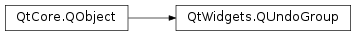

QUndoGroup¶
Synopsis¶
Functions¶
- def
activeStack() - def
addStack(stack) - def
canRedo() - def
canUndo() - def
createRedoAction(parent[, prefix=”“]) - def
createUndoAction(parent[, prefix=”“]) - def
isClean() - def
redoText() - def
removeStack(stack) - def
stacks() - def
undoText()
Slots¶
- def
redo() - def
setActiveStack(stack) - def
undo()
Signals¶
- def
activeStackChanged(stack) - def
canRedoChanged(canRedo) - def
canUndoChanged(canUndo) - def
cleanChanged(clean) - def
indexChanged(idx) - def
redoTextChanged(redoText) - def
undoTextChanged(undoText)
Detailed Description¶
The
PySide2.QtWidgets.QUndoGroupclass is a group ofPySide2.QtWidgets.QUndoStackobjects.For an overview of the Qt’s undo framework, see the overview.
An application often has multiple undo stacks, one for each opened document. At the same time, an application usually has one undo action and one redo action, which triggers undo or redo in the active document.
PySide2.QtWidgets.QUndoGroupis a group ofPySide2.QtWidgets.QUndoStackobjects, one of which may be active. It has anPySide2.QtWidgets.QUndoGroup.undo()andPySide2.QtWidgets.QUndoGroup.redo()slot, which callsQUndoStack.undo()andQUndoStack.redo()for the active stack. It also has the functionsPySide2.QtWidgets.QUndoGroup.createUndoAction()andPySide2.QtWidgets.QUndoGroup.createRedoAction(). The actions returned by these functions behave in the same way as those returned byQUndoStack.createUndoAction()andQUndoStack.createRedoAction()of the active stack.Stacks are added to a group with
PySide2.QtWidgets.QUndoGroup.addStack()and removed withPySide2.QtWidgets.QUndoGroup.removeStack(). A stack is implicitly added to a group when it is created with the group as its parentPySide2.QtCore.QObject.It is the programmer’s responsibility to specify which stack is active by calling
QUndoStack.setActive(), usually when the associated document window receives focus. The active stack may also be set withPySide2.QtWidgets.QUndoGroup.setActiveStack(), and is returned byPySide2.QtWidgets.QUndoGroup.activeStack().When a stack is added to a group using
PySide2.QtWidgets.QUndoGroup.addStack(), the group does not take ownership of the stack. This means the stack has to be deleted separately from the group. When a stack is deleted, it is automatically removed from a group. A stack may belong to only one group. Adding it to another group will cause it to be removed from the previous group.A
PySide2.QtWidgets.QUndoGroupis also useful in conjunction withPySide2.QtWidgets.QUndoView. If aPySide2.QtWidgets.QUndoViewis set to watch a group usingQUndoView.setGroup(), it will update itself to display the active stack.
-
class
PySide2.QtWidgets.QUndoGroup([parent=nullptr])¶ Parameters: parent – PySide2.QtCore.QObjectCreates an empty
PySide2.QtWidgets.QUndoGroupobject with parentparent.
-
PySide2.QtWidgets.QUndoGroup.activeStack()¶ Return type: PySide2.QtWidgets.QUndoStackReturns the active stack of this group.
If none of the stacks are active, or if the group is empty, this function returns 0.
-
PySide2.QtWidgets.QUndoGroup.activeStackChanged(stack)¶ Parameters: stack – PySide2.QtWidgets.QUndoStack
-
PySide2.QtWidgets.QUndoGroup.addStack(stack)¶ Parameters: stack – PySide2.QtWidgets.QUndoStackAdds
stackto this group. The group does not take ownership of the stack. Another way of adding a stack to a group is by specifying the group as the stack’s parentPySide2.QtCore.QObjectinQUndoStack.QUndoStack(). In this case, the stack is deleted when the group is deleted, in the usual manner of QObjects.See also
PySide2.QtWidgets.QUndoGroup.removeStack()PySide2.QtWidgets.QUndoGroup.stacks()QUndoStack.QUndoStack()
-
PySide2.QtWidgets.QUndoGroup.canRedo()¶ Return type: PySide2.QtCore.boolReturns the value of the active stack’s
QUndoStack.canRedo().If none of the stacks are active, or if the group is empty, this function returns
false.
-
PySide2.QtWidgets.QUndoGroup.canRedoChanged(canRedo)¶ Parameters: canRedo – PySide2.QtCore.bool
-
PySide2.QtWidgets.QUndoGroup.canUndo()¶ Return type: PySide2.QtCore.boolReturns the value of the active stack’s
QUndoStack.canUndo().If none of the stacks are active, or if the group is empty, this function returns
false.
-
PySide2.QtWidgets.QUndoGroup.canUndoChanged(canUndo)¶ Parameters: canUndo – PySide2.QtCore.bool
-
PySide2.QtWidgets.QUndoGroup.cleanChanged(clean)¶ Parameters: clean – PySide2.QtCore.bool
-
PySide2.QtWidgets.QUndoGroup.createRedoAction(parent[, prefix=""])¶ Parameters: - parent –
PySide2.QtCore.QObject - prefix – unicode
Return type: Creates an redo
PySide2.QtWidgets.QActionobject with parentparent.Triggering this action will cause a call to
QUndoStack.redo()on the active stack. The text of this action will always be the text of the command which will be redone in the next call toPySide2.QtWidgets.QUndoGroup.redo(), prefixed byprefix. If there is no command available for redo, if the group is empty or if none of the stacks are active, this action will be disabled.If
prefixis empty, the default template “Redo %1” is used instead of prefix. Before Qt 4.8, the prefix “Redo” was used by default.- parent –
-
PySide2.QtWidgets.QUndoGroup.createUndoAction(parent[, prefix=""])¶ Parameters: - parent –
PySide2.QtCore.QObject - prefix – unicode
Return type: Creates an undo
PySide2.QtWidgets.QActionobject with parentparent.Triggering this action will cause a call to
QUndoStack.undo()on the active stack. The text of this action will always be the text of the command which will be undone in the next call toPySide2.QtWidgets.QUndoGroup.undo(), prefixed byprefix. If there is no command available for undo, if the group is empty or if none of the stacks are active, this action will be disabled.If
prefixis empty, the default template “Undo %1” is used instead of prefix. Before Qt 4.8, the prefix “Undo” was used by default.- parent –
-
PySide2.QtWidgets.QUndoGroup.indexChanged(idx)¶ Parameters: idx – PySide2.QtCore.int
-
PySide2.QtWidgets.QUndoGroup.isClean()¶ Return type: PySide2.QtCore.boolReturns the value of the active stack’s
QUndoStack.isClean().If none of the stacks are active, or if the group is empty, this function returns
true.
-
PySide2.QtWidgets.QUndoGroup.redo()¶ Calls
QUndoStack.redo()on the active stack.If none of the stacks are active, or if the group is empty, this function does nothing.
-
PySide2.QtWidgets.QUndoGroup.redoText()¶ Return type: unicode Returns the value of the active stack’s
QUndoStack.redoText().If none of the stacks are active, or if the group is empty, this function returns an empty string.
-
PySide2.QtWidgets.QUndoGroup.redoTextChanged(redoText)¶ Parameters: redoText – unicode
-
PySide2.QtWidgets.QUndoGroup.removeStack(stack)¶ Parameters: stack – PySide2.QtWidgets.QUndoStackRemoves
stackfrom this group. If the stack was the active stack in the group, the active stack becomes 0.See also
PySide2.QtWidgets.QUndoGroup.addStack()PySide2.QtWidgets.QUndoGroup.stacks()QUndoStack.~QUndoStack()
-
PySide2.QtWidgets.QUndoGroup.setActiveStack(stack)¶ Parameters: stack – PySide2.QtWidgets.QUndoStackSets the active stack of this group to
stack.If the stack is not a member of this group, this function does nothing.
Synonymous with calling
QUndoStack.setActive()onstack.The actions returned by
PySide2.QtWidgets.QUndoGroup.createUndoAction()andPySide2.QtWidgets.QUndoGroup.createRedoAction()will now behave in the same way as those returned bystack‘sQUndoStack.createUndoAction()andQUndoStack.createRedoAction().
-
PySide2.QtWidgets.QUndoGroup.stacks()¶ Return type: Returns a list of stacks in this group.
-
PySide2.QtWidgets.QUndoGroup.undo()¶ Calls
QUndoStack.undo()on the active stack.If none of the stacks are active, or if the group is empty, this function does nothing.
-
PySide2.QtWidgets.QUndoGroup.undoText()¶ Return type: unicode Returns the value of the active stack’s
QUndoStack.undoText().If none of the stacks are active, or if the group is empty, this function returns an empty string.
-
PySide2.QtWidgets.QUndoGroup.undoTextChanged(undoText)¶ Parameters: undoText – unicode
© 2018 The Qt Company Ltd. Documentation contributions included herein are the copyrights of their respective owners. The documentation provided herein is licensed under the terms of the GNU Free Documentation License version 1.3 as published by the Free Software Foundation. Qt and respective logos are trademarks of The Qt Company Ltd. in Finland and/or other countries worldwide. All other trademarks are property of their respective owners.